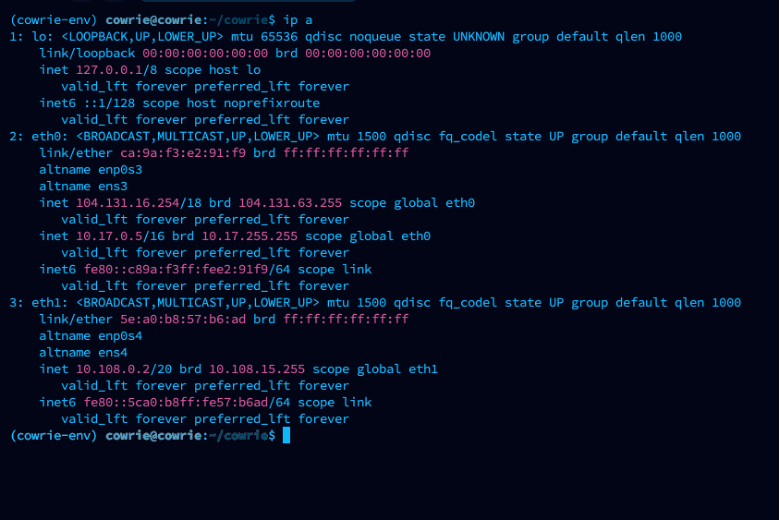
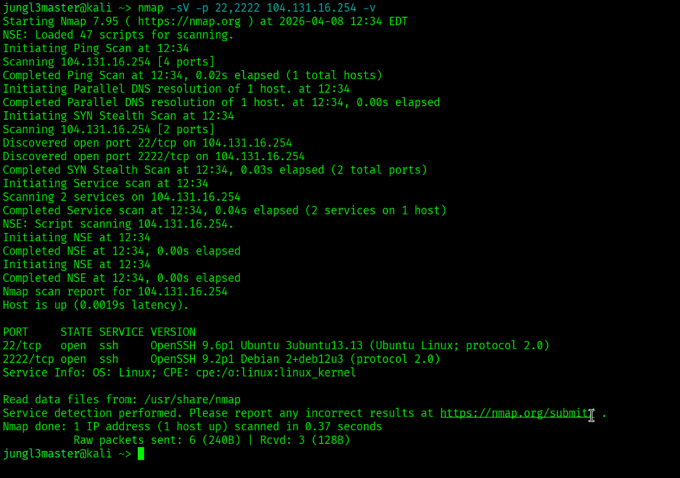
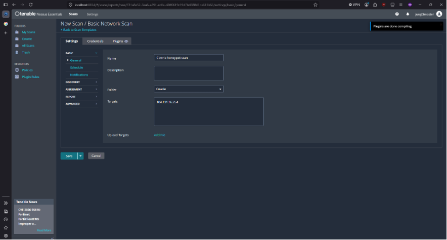
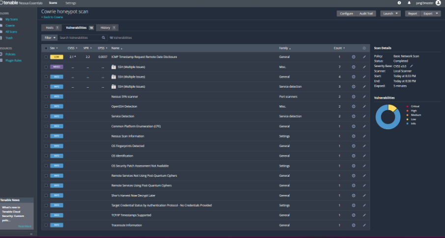
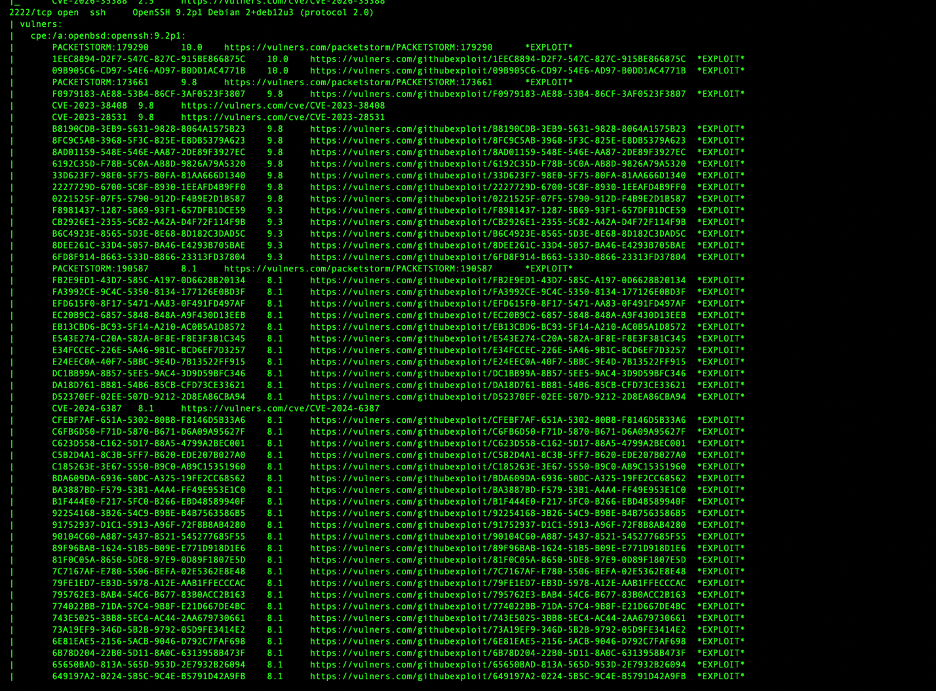
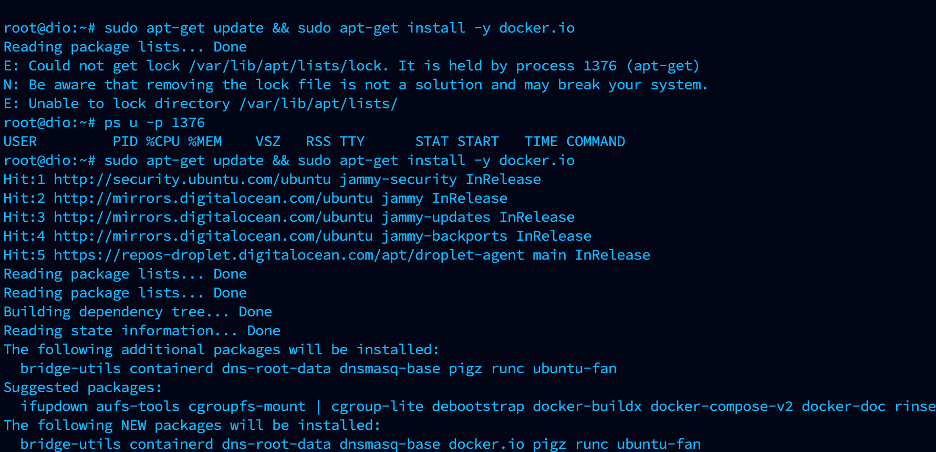
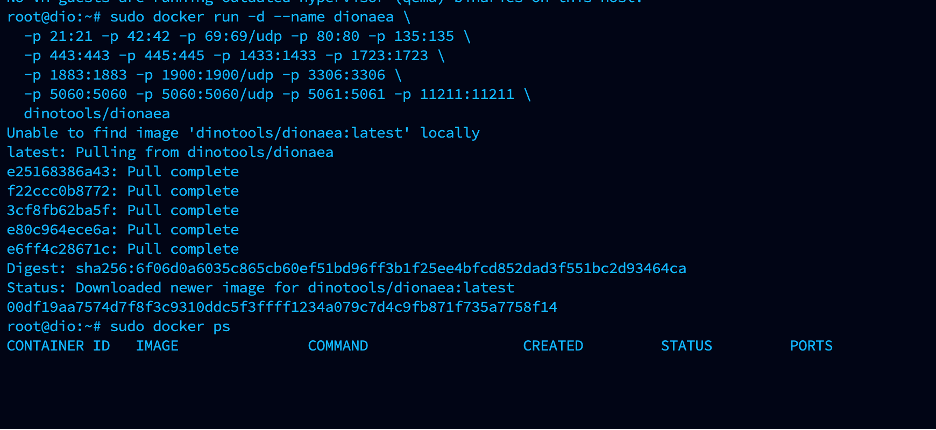
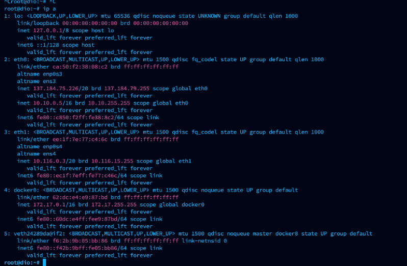
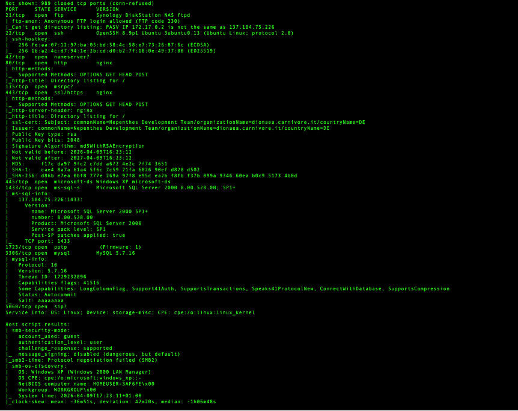
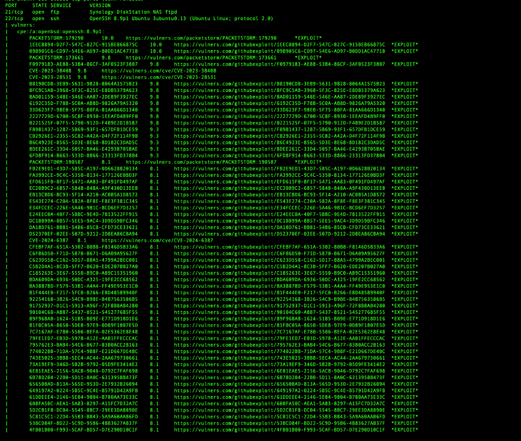

01
The premise
My first deployment used Cowrie, an SSH and Telnet honeypot designed to record attacker interactions. I installed it on a VPS instead of exposing a service from my own computer or home network. Later, I deployed Dionaea, a low-interaction honeypot that presents a wider collection of network services.
The two tools created a useful comparison. Cowrie concentrated on the path into an SSH-like system. Dionaea exposed FTP, HTTP, SMB, SQL, and other decoy services associated with malware delivery. The lab question became less about how many “vulnerabilities” a scanner could print and more about what those results actually described: the Linux host, the honeypot, or an intentionally fabricated banner.
02
Cowrie: separating the host from the decoy
After installing Cowrie, I used ip a to identify the VPS interface and confirm
the address assigned to eth0.


From a Kali VM, I ran
nmap -sV -p 22,2222 [Cowrie VPS] -v. The -p option limited the
scan to ports 22 and 2222, while -sV sent probes to identify the services and
versions responding on those ports.


That distinction matters. Port 22 was the management service for the actual VPS. Port 2222 was the instrumented surface Cowrie presented to visitors. A result tied to port 2222 could describe the identity Cowrie was simulating rather than software truly installed on the host.
I also configured a Nessus Basic Network Scan against the lab instance. The results page recorded one low-severity item and seventeen informational observations—not eighteen independently verified exploitable vulnerabilities.




03
Reading a long CVE list carefully
I followed the service scan with an NSE vulnerability pass using
nmap -sV --script vuln [Cowrie VPS]. The output was long, so I initially used
Google Gemini to summarize the most important and interesting-looking entries. That helped
triage the screen, but it did not validate any vulnerability.


The host-side SSH banner included OpenSSH 9.6p1-3ubuntu13.13. One correlation
raised CVE-2024-6387, the OpenSSH
signal-handling regression commonly called “regreSSHion.” Ubuntu lists
1:9.6p1-3ubuntu13.3 as the fixed package for Ubuntu 24.04 LTS. The revision
visible in the screenshot is newer than that fixed baseline, which is consistent with the
follow-up conclusion that the host had already been patched.
04
Dionaea: a wider service surface
Dionaea’s native installation guidance was oriented toward an older environment than the
VPS I was using, so I chose the project’s Docker image. The first package-install attempt
encountered an apt lock held by another process; after checking that process,
the package update and Docker installation proceeded.


I pulled dinotools/dionaea and mapped the ports used by Dionaea’s decoy
services. The capture records the image download and launch command. It also shows an empty
docker ps result at that moment, a reminder that pulling an image is not the
same as proving a container remains healthy and running.


After confirming the second VPS address, I ran
nmap -sV -A [Dionaea VPS] -v. The -A option enabled several
advanced detection features, including version detection and default NSE scripts. It also
made this a noisier scan appropriate only for an authorized target.




The scan’s Windows-like results were the point, not a contradiction. Dionaea supports protocols including SMB and MSSQL, so a Linux container can imitate service behavior that resembles a Windows system. Later vulnerability correlations referenced EternalBlue and DoublePulsar on the emulated SMB service; those names did not establish that the Linux VPS itself was a vulnerable Windows machine.


Port 22 remained different: it belonged to the actual VPS host and had to be assessed as real infrastructure. I retired the disposable VPS rather than leave uncertain exposure in place. A later advisory comparison showed that the banner-reported Ubuntu OpenSSH revision was newer than Ubuntu’s listed fixed revision for CVE-2024-6387, but package-manager and configuration checks—not a banner alone—are the appropriate way to confirm patch status.
05
What each honeypot is useful for
- CowrieFocuses on SSH and Telnet behavior: login attempts, commands, downloaded files, and the steps an intruder takes after apparent access.
- DionaeaPresents a broader set of services used to observe malware delivery and exploitation attempts across protocols such as SMB, FTP, HTTP, and database services.
- Host layerRemains genuine infrastructure. Administrative SSH, Docker, the operating system, and firewall rules require ordinary hardening even when the public-facing application is intentionally deceptive.
- Scanner layerDescribes what remote probes received. Results must be attributed to the host or decoy before CVE names can be treated as meaningful findings.
06
Takeaway
Honeypots are useful because they make attacker behavior observable, but they also make automated scan output unusually easy to misread. Cowrie showed how an SSH-focused decoy can be separated from the host’s real management service. Dionaea showed how one Linux system can intentionally present a collection of Windows- and malware-facing protocols.
The durable lesson was to identify the layer first, then investigate the finding. A long CVE list may describe a decoy banner, a genuine package, or a heuristic match. Only validation against the actual host state turns that list into a defensible security conclusion.
07
References
- Cowrie documentation — installation, configuration, deployment, and output guidance.
- Dionaea official repository and Docker deployment reference.
- Nmap Project. Service and Version Detection.
- Nmap Project. Nmap Scripting Engine: Usage and Examples.
- Ubuntu Security. CVE-2024-6387 status and fixed package versions.